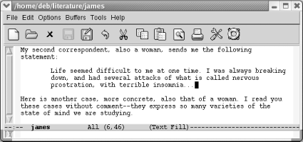
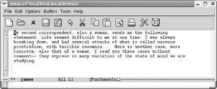
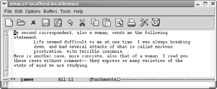
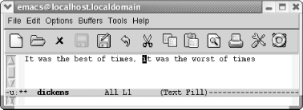
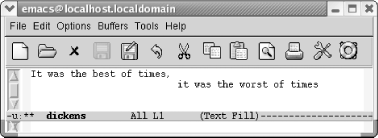
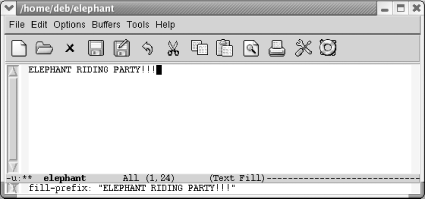
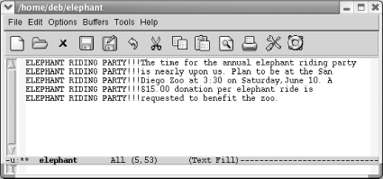

{% include JB/setup %}
{% raw %}
<div>
<div class="book" xml:lang="en"><div class="book"><div class="book"><div class="book"><h1 class="title"><a id="gnu3-CHP-7-SECT-2" class="calibre1"></a>Indenting Text</h1></div></div></div><p class="copyright">Emacs provides the ability
<a id="gnu3-CHP-7-ITERM-2311" class="calibre2"></a>
            <a id="gnu3-CHP-7-ITERM-2312" class="calibre2"></a>
            <a id="gnu3-CHP-7-ITERM-2313" class="calibre2"></a>to indent paragraphs, like a block
quote in a paper. It also allows you to use a paragraph style that
indents just the first line of a paragraph. This section describes
indentation-related commands, including how to change the margins for
the current session.</p><p class="copyright">Before we start, make sure you're in text mode. Look
at the mode line and, if the word <code class="calibre21">Text</code> is
displayed, you are in text mode. If not, type <span><strong class="calibre5">M-x</strong></span> 
            <span><strong class="calibre5">text-mode</strong></span>
            <span><strong class="calibre5">Enter</strong></span> to enter text mode.</p><div class="book" xml:lang="en"><div class="book"><div class="book"><div class="book"><h2 class="title1"><a id="gnu3-CHP-7-SECT-2.1" class="calibre1"></a>Indenting Paragraphs</h2></div></div></div><p class="copyright">Let's say you're writing
<a id="gnu3-CHP-7-ITERM-2314" class="calibre2"></a>
               <a id="gnu3-CHP-7-ITERM-2315" class="calibre2"></a>
               <a id="gnu3-CHP-7-ITERM-2316" class="calibre2"></a>a
paper and want to include some indented block quotes.
Emacs's default behavior makes this a
no-brainer.<sup class="calibre6">[<a id="gnu3-CHP-7-FNOTE-2" href="#ftn.gnu3-CHP-7-FNOTE-2" class="calibre2">2</a>]</sup> After you
finish your first paragraph, use tabs or spaces to indent to the
desired level and start typing the quote. Emacs automatically fills
the paragraph and the quote correctly, as shown in the following
screen.</p><div class="book"><a id="ch07-12-fm2xml" class="calibre2"></a><table class="calibre8"><colgroup class="calibre9"><col class="calibre10"/></colgroup><tbody class="calibre15"><tr class="calibre12"><td class="calibre17">
                           <p class="copyright">Some indented text:</p>
                        </td></tr><tr class="calibre12"><td class="calibre17">
                           <p class="copyright">
                              </p><div class="book"><div class="mediaobject"><a id="I_7_tt199" class="calibre2"></a></div></div><p class="copyright">
                           </p>
                        </td></tr><tr class="calibre12"><td class="calibre19">
                           <p class="copyright">Emacs indents the text properly and fills it correctly in auto-fill
mode.</p>
                        </td></tr></tbody></table></div><p class="copyright">What if an indented quote has multiple paragraphs? You could just
press <span><strong class="calibre5">Enter</strong></span> and then <span><strong class="calibre5">Tab</strong></span> again at the beginning of subsequent
paragraphs or you could press <span><strong class="calibre5">C-j</strong></span>
(for <span><strong class="calibre5">newline-and-indent</strong></span>). Pressing
<span><strong class="calibre5">C-j</strong></span> twice gives you a blank line
between paragraphs.</p></div><div class="book" xml:lang="en"><div class="book"><div class="book"><div class="book"><h2 class="title1"><a id="gnu3-CHP-7-SECT-2.2" class="calibre1"></a>Indenting the First Line of a Paragraph</h2></div></div></div><p class="copyright">Some people
prefer<a id="gnu3-CHP-7-ITERM-2317" class="calibre2"></a>
               <a id="gnu3-CHP-7-ITERM-2318" class="calibre2"></a>
               <a id="gnu3-CHP-7-ITERM-2319" class="calibre2"></a> paragraphs in which the
first line is indented. Knowing about the intricacies of tabs, you
might be concerned that pressing <span><strong class="calibre5">Tab</strong></span>
to indent the opening line of your paragraph will incite
Emacs to indent the whole paragraph as you continue typing. And it
would, to be honest.</p><p class="copyright">Emacs provides a special mode for this purpose: paragraph indent text
mode. It's also available as a minor mode. Enter
either <span><strong class="calibre5">M-x
paragraph-indent-text-mode</strong></span> or <span><strong class="calibre5">M-x
paragraph-ident-minor-mode</strong></span> respectively. If you run the
major mode, Emacs displays <code class="calibre21">Parindent</code> on the mode
line.</p><p class="copyright">When you press <span><strong class="calibre5">Tab</strong></span> to start a
paragraph, Emacs inserts a tab's worth of space.
When you start a new paragraph, you don't have to
skip a line in between and pressing <span><strong class="calibre5">Tab</strong></span> to start that second paragraph yields
again a tab's worth of space, not aligning with the
second word of the previous line as Emacs would do in text mode or
fundamental mode.</p><p class="copyright">Pressing <span><strong class="calibre5">M-q</strong></span> reformats paragraphs
without mushing them all together. If you prefer indented paragraphs,
this mode is exactly what you want. When you need to indent a block
quote, you may want to temporarily enter text mode to make it easier
and add your paragraph indentations manually.</p></div><div class="book" xml:lang="en"><div class="book"><div class="book"><div class="book"><h2 class="title1"><a id="gnu3-CHP-7-SECT-2.3" class="calibre1"></a>Filling Indented Paragraphs</h2></div></div></div><p class="copyright">Let's say you've got
a<a id="gnu3-CHP-7-ITERM-2320" class="calibre2"></a>
               <a id="gnu3-CHP-7-ITERM-2321" class="calibre2"></a>
               <a id="gnu3-CHP-7-ITERM-2322" class="calibre2"></a>
paper with paragraphs indented at various levels. What if you edit
them and need to fill them again? Especially if there are no blank
lines in between paragraphs, <span><strong class="calibre5">M-q</strong></span>
munges all the text into one big (nonindented) paragraph. Instead of
<span><strong class="calibre5">M-q</strong></span>, mark the region in question and
use a special fill command: <span><strong class="calibre5">M-x</strong></span>
               <span><strong class="calibre5">fill-individual-paragraphs</strong></span>. Emacs
preserves each paragraph's indentation.</p><p class="copyright">Let's contrast these two commands with an example.
We'll use our previous Henry James example, but
delete the lines between paragraphs to show what happens if you use
<span><strong class="calibre5">M-q</strong></span> in this case. These paragraphs
need to be reformatted.</p><div class="book"><a id="ch07-13-fm2xml" class="calibre2"></a><table class="calibre8"><colgroup class="calibre9"><col class="calibre10"/></colgroup><tbody class="calibre15"><tr class="calibre12"><td class="calibre17">
                           <p class="copyright">Initial state:</p>
                        </td></tr><tr class="calibre12"><td class="calibre17">
                           <p class="copyright">
                              </p><div class="book"><div class="mediaobject"><a id="I_7_tt200" class="calibre2"></a></div></div><p class="copyright">
                           </p>
                        </td></tr><tr class="calibre12"><td class="calibre19">
                           <p class="copyright">Some sample paragraphs from Henry James, in need of reformatting.</p>
                        </td></tr></tbody></table></div><div class="book"><a id="ch07-14-fm2xml" class="calibre2"></a><table class="calibre8"><colgroup class="calibre9"><col class="calibre10"/></colgroup><tbody class="calibre15"><tr class="calibre12"><td class="calibre17">
                           <p class="copyright">Type: <span><strong class="calibre5">M-q</strong></span>
                           </p>
                        </td></tr><tr class="calibre12"><td class="calibre17">
                           <p class="copyright">
                              </p><div class="book"><div class="mediaobject"><a id="I_7_tt201" class="calibre2"></a></div></div><p class="copyright">
                           </p>
                        </td></tr><tr class="calibre12"><td class="calibre19">
                           <p class="copyright">Emacs munges it all into one large paragraph.</p>
                        </td></tr></tbody></table></div><p class="copyright">We'll undo that command, mark the buffer as a
region, and use the <span><strong class="calibre5">fill-individual-paragraphs</strong></span> command.</p><div class="book"><a id="ch07-15-fm2xml" class="calibre2"></a><table class="calibre8"><colgroup class="calibre9"><col class="calibre10"/></colgroup><tbody class="calibre15"><tr class="calibre12"><td class="calibre17">
                           <p class="copyright">Type: <span><strong class="calibre5">C- _ C-x h M-x fill-individual-paragraphs
Enter</strong></span>
                           </p>
                        </td></tr><tr class="calibre12"><td class="calibre17">
                           <p class="copyright">
                              </p><div class="book"><div class="mediaobject"><a id="I_7_tt202" class="calibre2"></a></div></div><p class="copyright">
                           </p>
                        </td></tr><tr class="calibre12"><td class="calibre19">
                           <p class="copyright">Emacs refills the paragraphs properly.</p>
                        </td></tr></tbody></table></div><div class="book" xml:lang="en"><div class="book"><div class="book"><div class="book"><h3 class="title4"><a id="gnu3-CHP-7-SECT-2.3.1" class="calibre1"></a>Indenting regions</h3></div></div></div><p class="copyright">What if you have already typed your
<a id="gnu3-CHP-7-ITERM-2323" class="calibre2"></a>
                  <a id="gnu3-CHP-7-ITERM-2324" class="calibre2"></a>text
without indentation and want to indent it later? Two commands can
handle this, depending on how far you want to indent the region.</p><p class="copyright">The <span><strong class="calibre5">indent-region</strong></span> command, bound to
<span><strong class="calibre5">C-M-\</strong></span>, can indent a region one level
easily. If you want to indent two levels, it is unpredictable. (This
command is designed for indenting code.)</p><p class="copyright">Here's an example. The second paragraph is marked as
a region.</p><div class="book"><a id="ch07-17-fm2xml" class="calibre2"></a><table class="calibre8"><colgroup class="calibre9"><col class="calibre10"/></colgroup><tbody class="calibre15"><tr class="calibre12"><td class="calibre17">
                              <p class="copyright">Type: <span><strong class="calibre5">C-M-\</strong></span>
                              </p>
                           </td></tr><tr class="calibre12"><td class="calibre17">
                              <p class="copyright">
                                 </p><div class="book"><div class="mediaobject"><a id="I_7_tt203" class="calibre2"></a></div></div><p class="copyright">
                              </p>
                           </td></tr><tr class="calibre12"><td class="calibre19">
                              <p class="copyright">Emacs indents the paragraph one level.</p>
                           </td></tr></tbody></table></div><p class="copyright">You decide that's not far enough.</p><div class="book"><a id="ch07-18-fm2xml" class="calibre2"></a><table class="calibre8"><colgroup class="calibre9"><col class="calibre10"/></colgroup><tbody class="calibre15"><tr class="calibre12"><td class="calibre17">
                              <p class="copyright">Type: <span><strong class="calibre5">C-M-\</strong></span>
                              </p>
                           </td></tr><tr class="calibre12"><td class="calibre17">
                              <p class="copyright">
                                 </p><div class="book"><div class="mediaobject"><a id="I_7_tt204" class="calibre2"></a></div></div><p class="copyright">
                              </p>
                           </td></tr><tr class="calibre12"><td class="calibre19">
                              <p class="copyright">Emacs creates a stairstep hanging indent.</p>
                           </td></tr></tbody></table></div><p class="copyright">So you can see that this works fine if you're
indenting one level. If you try this with multiple paragraphs of
different indentation levels, <span><strong class="calibre5">indent-region</strong></span> pulls them all to the right,
aligning them with the least indented paragraph, probably not what
you intended. If you write code, however, this command is great for
cleaning up messy indentation.</p><p class="copyright">The other option is to mark the region and type <span><strong class="calibre5">C-x Tab</strong></span> (for <span><strong class="calibre5">indent-rigidly</strong></span>). By default, this command
indents only one space, so if you want to indent further, you need to
give it an argument. For example, to indent the previous paragraph 15
spaces:</p><div class="book"><a id="ch07-19-fm2xml" class="calibre2"></a><table class="calibre8"><colgroup class="calibre9"><col class="calibre10"/></colgroup><tbody class="calibre15"><tr class="calibre12"><td class="calibre17">
                              <p class="copyright">Mark the region then type: <span><strong class="calibre5">M-15 C-x
Tab</strong></span>
                              </p>
                           </td></tr><tr class="calibre12"><td class="calibre17">
                              <p class="copyright">
                                 </p><div class="book"><div class="mediaobject"><a id="I_7_tt205" class="calibre2"></a></div></div><p class="copyright">
                              </p>
                           </td></tr><tr class="calibre12"><td class="calibre19">
                              <p class="copyright">Emacs indents the paragraph 15 spaces.</p>
                           </td></tr></tbody></table></div><p class="copyright">Although arguably it can be a pain to supply an argument, <span><strong class="calibre5">indent-rigidly</strong></span> uniformly indents text, leaving
indented paragraphs indented. If you find yourself wanting to indent
whole files, you may actually want to change the margin settings, as
described in the next section.</p></div><div class="book" xml:lang="en"><div class="book"><div class="book"><div class="book"><h3 class="title4"><a id="gnu3-CHP-7-SECT-2.3.2" class="calibre1"></a>Other indentation tricks</h3></div></div></div><p class="copyright">Whenever you are using
<a id="gnu3-CHP-7-ITERM-2325" class="calibre2"></a>indentation,
you can use <span><strong class="calibre5">M-m</strong></span> (for <span><strong class="calibre5">back-to-indentation</strong></span>) to move to the first
nonblank character on a line. On a line that's not
indented, this command simply moves you to the beginning of the line.
In other words, <span><strong class="calibre5">M-m</strong></span> brings you to
the "logical" beginning of the
line, which is what you usually mean when you type <span><strong class="calibre5">C-a</strong></span>.</p><p class="copyright">Another indentation
<a id="gnu3-CHP-7-ITERM-2326" class="calibre2"></a>
                  <a id="gnu3-CHP-7-ITERM-2327" class="calibre2"></a>command
is <span><strong class="calibre5">C-M-o</strong></span> (for <span><strong class="calibre5">split-line</strong></span>). You can use this command to
create a stairstep effect. Move the cursor to the text that you want
to put on the next line and press <span><strong class="calibre5">C-M-o</strong></span>. Note that there must be some text
following the cursor in order for this command to work properly; if
you try it at the end of a line, it does nothing.</p><div class="book"><a id="ch07-20-fm2xml" class="calibre2"></a><table class="calibre8"><colgroup class="calibre9"><col class="calibre10"/></colgroup><tbody class="calibre15"><tr class="calibre12"><td class="calibre17">
                              <p class="copyright">Initial state:</p>
                           </td></tr><tr class="calibre12"><td class="calibre17">
                              <p class="copyright">
                                 </p><div class="book"><div class="mediaobject"><a id="I_7_tt206" class="calibre2"></a></div></div><p class="copyright">
                              </p>
                           </td></tr><tr class="calibre12"><td class="calibre19">
                              <p class="copyright">We want to split this line.</p>
                           </td></tr></tbody></table></div><div class="book"><a id="ch07-21-fm2xml" class="calibre2"></a><table class="calibre8"><colgroup class="calibre9"><col class="calibre10"/></colgroup><tbody class="calibre15"><tr class="calibre12"><td class="calibre17">
                              <p class="copyright">Type: <span><strong class="calibre5">C-M-o</strong></span>
                              </p>
                           </td></tr><tr class="calibre12"><td class="calibre17">
                              <p class="copyright">
                                 </p><div class="book"><div class="mediaobject"><a id="I_7_tt207" class="calibre2"></a></div></div><p class="copyright">
                              </p>
                           </td></tr><tr class="calibre12"><td class="calibre19">
                              <p class="copyright">
                                 <span><strong class="calibre5">C-M-o</strong></span> splits the line at the cursor
position.</p>
                           </td></tr></tbody></table></div></div></div><div class="book" xml:lang="en"><div class="book"><div class="book"><div class="book"><h2 class="title1"><a id="gnu3-CHP-7-SECT-2.4" class="calibre1"></a>Changing Margins</h2></div></div></div><p class="copyright">Emacs is not a word processor,
<a id="gnu3-CHP-7-ITERM-2328" class="calibre2"></a>
               <a id="gnu3-CHP-7-ITERM-2329" class="calibre2"></a>but
it does have a few commands that change left and right indentation
for a buffer for the current session. First, mark the whole buffer
using <span><strong class="calibre5">C-x h</strong></span>. You can then gchange
the indention using <span><strong class="calibre5">M-x</strong></span> followed by
one of the following commands:</p><table border="0" summary="Simple list" class="simplelist"><tr class="calibre22"><td class="calibre19">
                  <span><strong class="calibre5">increase-left-margin</strong></span>
               </td></tr><tr class="calibre22"><td class="calibre19">
                  <span><strong class="calibre5">decrease-left-margin</strong></span>
               </td></tr><tr class="calibre22"><td class="calibre19">
                  <span><strong class="calibre5">increase-right-margin</strong></span>
               </td></tr><tr class="calibre22"><td class="calibre19">
                  <span><strong class="calibre5">decrease-right-margin</strong></span>
               </td></tr></table><p class="copyright">These commands are also available through the Edit menu. Choose Edit
<span>→</span> Text Properties <span>→</span> Indentation to see the options.</p><p class="copyright">Unless you supply a numeric argument using <span><strong class="calibre5">C-u</strong></span> or <span><strong class="calibre5">M-</strong></span>
               <span><em class="calibre7">n</em></span> preceding these
commands, Emacs increases or decreases the margins by the number of
characters in the variable <span><strong class="calibre5">standard-indent</strong></span>, which defaults to 4. If
auto-fill mode is on, Emacs also reformats the paragraphs
automatically.</p><p class="copyright">Margin settings remain in effect for the current session and the
current buffer only. Although the values don't
persist to another session, any text that is indented using this
method remains indented when you reopen the file. If you open the
file again and add some text, however, it is not indented; you have
to set the margins again.</p><p class="copyright">These commands work best in cases where you want to change the margin
for the whole buffer. If you define a smaller region, the commands
work but if you type more paragraphs, the margin settings persist
whether you want them to or not. These commands work fine if
you've completed the file and then decide to change
the indentation.</p><p class="copyright">Alternatively, you can set and save margins using enriched mode, a
minor mode that allows Emacs to save text properties, including
margin settings and font changes. See <a class="calibre2" href="ch10.html" title="Chapter 10. Customizing Emacs">Chapter 10</a>
for more details on enriched mode.</p></div><div class="book" xml:lang="en"><div class="book"><div class="book"><div class="book"><h2 class="title1"><a id="gnu3-CHP-7-SECT-2.5" class="calibre1"></a>Using Fill Prefixes</h2></div></div></div><p class="copyright">Fill prefixes are a way of
<a id="gnu3-CHP-7-ITERM-2330" class="calibre2"></a>
               <a id="gnu3-CHP-7-ITERM-2331" class="calibre2"></a>
               <a id="gnu3-CHP-7-ITERM-2332" class="calibre2"></a>putting a certain string of characters
at the beginning of each line in a paragraph or a file. Developers
will immediately think of comments as a potential fill prefix. When
writing email or newsposts, email programs often insert a string to
help readers distinguish the threads of a discussion. For those of us
writing text files, fill prefixes can be used to insert whitespace in
paragraphs or any relevant string of characters.</p><p class="copyright">The term <span><em class="calibre7">fill</em></span> 
               <span><em class="calibre7">prefix</em></span> comes
from the fact that Emacs calls word wrap
<span><em class="calibre7">auto-fill</em></span> 
               <span><em class="calibre7">mode</em></span>; in other
words, a fill prefix is a string that Emacs should insert at the
beginning of each line (or "prefix"
each line with) when doing word wrap.</p><p class="copyright">To use fill prefixes, it's best to be in auto-fill
mode. If your mode line says <code class="calibre21">Fill</code> on it,
you're already in auto-fill mode. If it
doesn't, type <span><strong class="calibre5">M-x</strong></span>
               <span><strong class="calibre5">auto-fill-mode</strong></span> 
               <span><strong class="calibre5">Enter</strong></span>.</p><p class="copyright">Now let's assume that you want to indent a letter.
For the first line of the letter, type your indentation by
hand—say, eight spaces. Then type <span><strong class="calibre5">C-x
</strong></span>. (for <span><strong class="calibre5">set-fill-prefix</strong></span>).
Emacs displays the message: <code class="calibre21">fill prefix " </code>" in the
minibuffer. Then start typing normally. Whenever you type past the
right margin and Emacs breaks a line for you, it automatically
inserts your eight-space indentation at the beginning of the line.</p><p class="copyright">Here's a slightly more exciting example.
There's no reason that fill prefixes must to be
spaces; they can be anything you choose. Assume that
you're sending an email message to your friends to
announce a unique event and you want an eye-catching fill prefix.</p><div class="book"><a id="ch07-23-fm2xml" class="calibre2"></a><table class="calibre8"><colgroup class="calibre9"><col class="calibre10"/></colgroup><tbody class="calibre15"><tr class="calibre12"><td class="calibre17">
                           <p class="copyright">Type: <span><strong class="calibre5">Elephant Riding Party!!! C-x </strong></span>.</p>
                        </td></tr><tr class="calibre12"><td class="calibre17">
                           <p class="copyright">
                              </p><div class="book"><div class="mediaobject"><a id="I_7_tt208" class="calibre2"></a></div></div><p class="copyright">
                           </p>
                        </td></tr><tr class="calibre12"><td class="calibre19">
                           <p class="copyright">Type the prefix, then <span><strong class="calibre5">C-x</strong></span> . to set it.</p>
                        </td></tr></tbody></table></div><p class="copyright">Once you've set the prefix, you can type your
message normally.</p><div class="book"><a id="ch07-24-fm2xml" class="calibre2"></a><table class="calibre8"><colgroup class="calibre9"><col class="calibre10"/></colgroup><tbody class="calibre15"><tr class="calibre12"><td class="calibre17">
                           <p class="copyright">Type: <span><strong class="calibre5">The time . . . the zoo</strong></span>.</p>
                        </td></tr><tr class="calibre12"><td class="calibre17">
                           <p class="copyright">
                              </p><div class="book"><div class="mediaobject"><a id="I_7_tt209" class="calibre2"></a></div></div><p class="copyright">
                           </p>
                        </td></tr><tr class="calibre12"><td class="calibre19">
                           <p class="copyright">Emacs inserts the fill prefix at the beginning of each line of the
message.</p>
                        </td></tr></tbody></table></div><p class="copyright">You had to type "Elephant Riding
Party!!!" only once; Emacs inserted the rest
automatically. Here are some things you might want to know about fill
prefixes:</p><div class="book"><ul class="itemizedlist"><li class="listitem"><p class="copyright">Emacs never applies the fill prefix to the first line of a paragraph.
You obviously can't apply it to the first line of
the first paragraph (you have to type it somewhere). But Emacs
can't apply it to the first line of
<span><em class="calibre7">any</em></span> paragraph. In other words, if the
"elephant riding" message had two
paragraphs, you'd have to type (or yank) the phrase
"Elephant Riding Party!!!" at the
beginning of the second paragraph.</p></li><li class="listitem"><p class="copyright">However, you don't need to set the fill prefix
again. Emacs supplies your prefix for all lines but the first in
subsequent paragraphs. It just gets confused about the initial line
of any paragraph.</p></li><li class="listitem"><p class="copyright">Once you've started using a fill prefix, how do you
turn it off? There's no special command. All you do
is put the cursor at the left margin and type <span><strong class="calibre5">C-x</strong></span> . to
define a new, empty fill prefix.</p></li><li class="listitem"><p class="copyright">You can edit paragraphs with fill prefixes, then reformat them with
<span><strong class="calibre5">M-q</strong></span>, as long as the fill prefix is
still defined. If you have cleared the fill prefix, Emacs reformats
the paragraph without regard to the fill prefix. If you need to
reformat your paragraphs later, after you've
canceled the fill prefix, define it again and then type <span><strong class="calibre5">M-q</strong></span>.</p></li></ul></div><p class="copyright">
               <a class="calibre2" href="ch07s02.html#gnu3-CHP-7-TABLE-2" title="Table 7-2. Indentation commands">Table 7-2</a> lists the indentation
<a id="gnu3-CHP-7-ITERM-2333" class="calibre2"></a>
               <a id="gnu3-CHP-7-ITERM-2334" class="calibre2"></a>commands
we've discussed.</p><div class="book"><a id="gnu3-CHP-7-TABLE-2" class="calibre2"></a><p class="title2"><b class="calibre25">Table 7-2. Indentation commands</b></p><div class="table-contents"><table summary="Indentation commands" class="calibre8"><colgroup class="calibre9"><col class="calibre10"/><col class="calibre10"/><col class="calibre10"/></colgroup><thead class="calibre11"><tr class="calibre12"><th class="calibre26">
                           <p class="copyright">Keystrokes</p>
                        </th><th class="calibre26">
                           <p class="copyright">Command name</p>
                        </th><th class="calibre27">
                           <p class="copyright">Action</p>
                        </th></tr></thead><tbody class="calibre15"><tr class="calibre12"><td class="calibre28">
                           <p class="copyright">
                              <span><strong class="calibre5">C-j</strong></span>
                           </p>
                        </td><td class="calibre28">
                           <p class="copyright">
                              <span><strong class="calibre5">newline-and-indent</strong></span>
                           </p>
                        </td><td class="calibre29">
                           <p class="copyright">Move to the next line and indent to the current level.</p>
                        </td></tr><tr class="calibre12"><td class="calibre28">
                           <p class="copyright">(<span><em class="calibre7">none</em></span>)</p>
                        </td><td class="calibre28">
                           <p class="copyright">
                              <span><strong class="calibre5">paragraph-indent-text-mode</strong></span>
                           </p>
                        </td><td class="calibre29">
                           <p class="copyright">A major mode for writing paragraphs with indented first lines and no
blank lines between paragraphs.</p>
                        </td></tr><tr class="calibre12"><td class="calibre28">
                           <p class="copyright">(<span><em class="calibre7">none</em></span>)</p>
                        </td><td class="calibre28">
                           <p class="copyright">
                              <span><strong class="calibre5">paragraph-indent-minor-mode</strong></span>
                           </p>
                        </td><td class="calibre29">
                           <p class="copyright">The minor mode equivalent of paragraph-indent-text mode.</p>
                        </td></tr><tr class="calibre12"><td class="calibre28">
                           <p class="copyright">(<span><em class="calibre7">none</em></span>)</p>
                        </td><td class="calibre28">
                           <p class="copyright">
                              <span><strong class="calibre5">fill-individual-paragraphs</strong></span>
                           </p>
                        </td><td class="calibre29">
                           <p class="copyright">Reformat indented paragraphs, preserving indentation.</p>
                        </td></tr><tr class="calibre12"><td class="calibre28">
                           <p class="copyright">
                              <span><strong class="calibre5">C-x Tab</strong></span>
                           </p>
                        </td><td class="calibre28">
                           <p class="copyright">
                              <span><strong class="calibre5">indent-rigidly</strong></span>
                           </p>
                        </td><td class="calibre29">
                           <p class="copyright">Indent one column; preface with <span><strong class="calibre5">C-u</strong></span>
or <span><strong class="calibre5">M-n</strong></span> to specify multiple columns.</p>
                        </td></tr><tr class="calibre12"><td class="calibre28">
                           <p class="copyright">
                              <span><strong class="calibre5">C-M-\</strong></span>
                           </p>
                        </td><td class="calibre28">
                           <p class="copyright">
                              <span><strong class="calibre5">indent-region</strong></span>
                           </p>
                        </td><td class="calibre29">
                           <p class="copyright">Indent a region to match the first line in the region.</p>
                        </td></tr><tr class="calibre12"><td class="calibre28">
                           <p class="copyright">
                              <span><strong class="calibre5">M-m</strong></span>
                           </p>
                        </td><td class="calibre28">
                           <p class="copyright">
                              <span><strong class="calibre5">back-to-indentation</strong></span>
                           </p>
                        </td><td class="calibre29">
                           <p class="copyright">Move the cursor to the first non-whitespace character on a line.</p>
                        </td></tr><tr class="calibre12"><td class="calibre28">
                           <p class="copyright">
                              <span><strong class="calibre5">C-M-o</strong></span>
                           </p>
                        </td><td class="calibre28">
                           <p class="copyright">
                              <span><strong class="calibre5">split-line</strong></span>
                           </p>
                        </td><td class="calibre29">
                           <p class="copyright">Split the line at the cursor position and indent it to the column of
the cursor position.</p>
                        </td></tr><tr class="calibre12"><td class="calibre28">
                           <p class="copyright">(<span><em class="calibre7">none</em></span>)<span><em class="calibre7">Edit</em></span> 
                              <span>→</span>
                              <span><em class="calibre7">Text Properties</em></span> 
                              <span>→</span>
                              <span><em class="calibre7">Indentation</em></span>
                              <span>→</span> 
                              <span><em class="calibre7">Indent
More</em></span>
                           </p>
                        </td><td class="calibre28">
                           <p class="copyright">
                              <span><strong class="calibre5">increase-left-margin</strong></span>
                           </p>
                        </td><td class="calibre29">
                           <p class="copyright">Increase the left indentation level for the buffer by four characters
by default.</p>
                        </td></tr><tr class="calibre12"><td class="calibre28">
                           <p class="copyright">(<span><em class="calibre7">none</em></span>)<span><em class="calibre7">Edit</em></span>
                              <span>→</span>
                              <span><em class="calibre7">Text Properties</em></span>
                              <span>→</span>
                              <span><em class="calibre7">Indentation</em></span>
                              <span>→</span> 
                              <span><em class="calibre7">Indent
Less</em></span>
                           </p>
                        </td><td class="calibre28">
                           <p class="copyright">
                              <span><strong class="calibre5">decrease-left-margin</strong></span>
                           </p>
                        </td><td class="calibre29">
                           <p class="copyright">Decrease the left indentation level for the buffer by four characters
by default.</p>
                        </td></tr><tr class="calibre12"><td class="calibre28">
                           <p class="copyright">(<span><em class="calibre7">none</em></span>)<span><em class="calibre7">Edit</em></span>
                              <span>→</span>
                              <span><em class="calibre7">Text Properties</em></span>
                              <span>→</span>
                              <span><em class="calibre7">ndentation</em></span>
                              <span>→</span> 
                              <span><em class="calibre7">Indent Right
More</em></span>
                           </p>
                        </td><td class="calibre28">
                           <p class="copyright">
                              <span><strong class="calibre5">decrease-right-margin</strong></span>
                           </p>
                        </td><td class="calibre29">
                           <p class="copyright">Decrease the right indentation level for the buffer by four
characters by default.</p>
                        </td></tr><tr class="calibre12"><td class="calibre28">
                           <p class="copyright">(<span><em class="calibre7">none</em></span>)<span><em class="calibre7">Edit</em></span>
                              <span>→</span>
                              <span><em class="calibre7">Text Properties</em></span>
                              <span>→</span>
                              <span><em class="calibre7">Indentation</em></span>
                              <span>→</span> 
                              <span><em class="calibre7">Indent Left
More</em></span>
                           </p>
                        </td><td class="calibre28">
                           <p class="copyright">
                              <span><strong class="calibre5">increase-right-margin</strong></span>
                           </p>
                        </td><td class="calibre29">
                           <p class="copyright">Increase the right indentation level for the buffer by four
characters by default.</p>
                        </td></tr><tr class="calibre12"><td class="calibre30">
                           <p class="copyright">
                              <span><strong class="calibre5">C-x </strong></span>.</p>
                        </td><td class="calibre30">
                           <p class="copyright">
                              <span><strong class="calibre5">set-fill-prefix</strong></span>
                           </p>
                        </td><td class="calibre31">
                           <p class="copyright">Use the information up to the cursor column as a prefix to each line
of the paragraph; typing this command in column 1 cancels the fill
prefix.</p>
                        </td></tr></tbody></table></div></div><br class="book"/></div><div class="book"><br class="book"/><hr class="calibre4"/><div class="book"><p class="copyright"><sup class="calibre6">[<a id="ftn.gnu3-CHP-7-FNOTE-2" href="#gnu3-CHP-7-FNOTE-2" class="calibre2">2</a>] </sup>Once upon a time, you had to enter
indented text mode explicitly to get the behavior we describe here.
Now it is on by default in text mode.</p></div></div></div></div>

{% endraw %}

